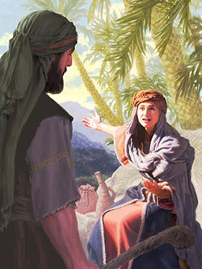

Lecciones de Escuela Sabática


Profetisa que juzgo a Israel en un lugar llamado "la palmera de Débora", en la zona montañosa de Efraín entre Rama y Betel (Jue. 4:5). Después de la larga opresión del rey de Hazor, Débora llamó a Barac y le encomendó la misión de liberar a Israel del yugo extranjero. Acompañó al ejército a la batalla y más tarde, con Barac, compuso un himno de victoria (Jue. 4:4-10; 5:1-31). Por lo general, este "Canto de Débora", un magnífico poema hebreo, es considerado uno de los ejemplos más antiguos de la literatura poética israelita. En su estructura muestra un estrecho paralelismo con los antiguos textos poéticos cananeos de Ugarit.
Reina judía del rey Asuero, o Jerjes, y heroína del libro del mismo nombre (véase Asuero 2). El nombre original hebreo de Ester era Hadassâh, "mirto". Probablemente adoptó el nombre Ester al entrar en la corte persa. Era hija de Abihail, aparentemente un benjamita, e hija adoptiva de su primo Mardoqueo, miembro de la corte de Asuero (Est. 2:5, 7, 15). Tanto Ester como Mardoqueo eran descendientes de los exiliados hebreos que habían sido transportados a Babilonia por Nabucodonosor más de 100 años antes, pero estaban entre los que habían elegido permanecer en la tierra de su exilio cuando Ciro les dio permiso para regresar a Judea. Ambos eran residentes en Susa, la antigua capital de Elam (pero en su tiempo una de las varias capitales de Persia), ubicada a unos 320 km al este de Babilonia.
Ester era una joven notablemente hermosa, cuyo tacto y simpatía le ganaron el favor real y el título de reina después que la anterior, Vasti, cayera en desgracia. Asuero le dio ese rango en su 7º año (c enero del 478 a.C.). Esto habría ocurrido poco después de la desastrosa guerra contra Grecia, marcada por las batallas de Salamina y de Platea. Cuatro años más tarde, en abril del 474 a.C., el favorito real, Amán, echa suertes y consigue que el rey firme un decreto real autorizando la muerte de todos los judíos dentro del Imperio Persa y la confiscación de sus propiedades (Est. 3:7-15). Por medio de este decreto procura vengarse de Mardoqueo, que, cuando el favorito entraba y salía por la puerta del palacio, permanentemente rehusaba inclinarse ante él (vs 2-6). Naturalmente, entre los judíos el decreto produce gran consternación, y Mardoqueo informa del problema a Ester (4:1-7) con la advertencia de que Dios ha dirigido las cosas para que ella pueda ser reina en esa hora de crisis y salvar a su pueblo (vs 8-17). En un supremo acto de valor sólo igualado por su infinito tacto, Ester interviene en favor de su nación, aparentemente revelando por primera vez que ella misma es judía (cps 6 y 7). Después de la ejecución de Amán, el rey eleva a Mardoqueo al anterior cargo del enemigo, y en el mes de junio firma un decreto preparado por Mardoqueo que neutraliza el anterior (cp 8). Como gozoso recuerdo de su milagrosa providencia, los judíos decretan un período de fiesta conocido como Purim, "suertes", por la suerte que echó Amán (3:7; 9:17-32). Desde entonces, los judíos la celebran en honor de Ester por su espíritu de valor y devoción, a quien Dios usó para la liberación de su pueblo (figs 212,337).
 Madre de Jesús (Mt. 1:18). Que ella provenía de la descendencia de David
está sugerido en Ro. 1:3 (cƒ Hch. 2:30; 13:23; 2 Ti. 2:8). María, como
también José, su prometido, vivía en Nazaret (Lc. 1:26; 2:39), y allí se le
apareció el ángel Gabriel y le reveló que sería bendecida por sobre todas
las rnujeres, porque sobre ella recaería el supremo privilegio codiciado por
las madres de Israel durante generaciones: sería la progenitora del "Hijo
del Altísimo", "el Hijo de Dios" (Lc. 1:26-35). María aceptó este honor con
humildad. Parecería que fue inmediatamente a una ciudad en la región
montañosa de Judá para visitar a su parienta, Elisabet, que sería la madre
de Juan el Bautista (vs 39, 40). En Lc. 1:36 se llama a Elisabet "parienta"
de María. "Parienta" es la traducción del gr. sunguenís, que es un término
general para "pariente".
Madre de Jesús (Mt. 1:18). Que ella provenía de la descendencia de David
está sugerido en Ro. 1:3 (cƒ Hch. 2:30; 13:23; 2 Ti. 2:8). María, como
también José, su prometido, vivía en Nazaret (Lc. 1:26; 2:39), y allí se le
apareció el ángel Gabriel y le reveló que sería bendecida por sobre todas
las rnujeres, porque sobre ella recaería el supremo privilegio codiciado por
las madres de Israel durante generaciones: sería la progenitora del "Hijo
del Altísimo", "el Hijo de Dios" (Lc. 1:26-35). María aceptó este honor con
humildad. Parecería que fue inmediatamente a una ciudad en la región
montañosa de Judá para visitar a su parienta, Elisabet, que sería la madre
de Juan el Bautista (vs 39, 40). En Lc. 1:36 se llama a Elisabet "parienta"
de María. "Parienta" es la traducción del gr. sunguenís, que es un término
general para "pariente".
Tres meses más tarde, poco antes del nacimiento de Juan el Bautista, María regresó a Nazaret (Lc. 1:56). Su casamiento con José pudo haber ocurrido en esta época (véase Mt. 1:18-25). Cuando se acercaba el tiempo para el nacimiento de Jesús, María y José tuvieron que viajar a su ciudad natal, Belén, para un "censo" (Lc. 2:1-5). En el pueblo, lleno de gente, no pudieron encontrar lugar para alojarse, a no ser un establo, y allí nació Jesús (vs 6, 7).
Cuarenta días después del nacimiento, María llevó a su primogénito al templo de Jerusalén, como lo requería la ley ceremonial (Lc. 2:22-24; cƒ Lv. 12:1-8; véase CBA 5:685). En ocasión se le reveló algo de sus conmovedoras experiencias futuras cuando Simeón profetizó que "una espada traspasará tu misma alma" (Lc 2:34, 35). Poco después de esto, María y José recibieron el aviso de un ángel de que debían huir a Egipto para proteger la vida del niño de los sanguinarios designios de Herodes (Mt. 2:1-18). Luego de algún tiempo, se les informó en un sueño de la muerte del rey, regresaron y se establecieron en Nazaret de Galilea (vs 19-23). Cuando Jesús cumplió 12 años, María y José lo llevaron a Jerusalén para participar de la Pascua (Lc. 2:41, 42). En esa ocasión, perdieron a Jesús. Cuando lo reprendieron después de hallarlo, les explicó sus actos con palabras que María en ese momento no pudo comprender (vs 43-51), pero "guardaba todas estas cosas, meditándolas en su corazón", como lo había hecho en una ocasión anterior (vs 8-19). 755 María estuvo presente en una fiesta de bodas en Caná de Galilea poco después que Jesús comenzó su ministerio. Cuando surgió la necesidad de vino, apeló a Jesús, quien, como respuesta, realizó su 1er milagro público transformando el agua en vino (Jn. 2:1-11). Después, ella con los discípulos y otros lo acompañaron a Capernaum (v 12). En Mt. 12:46, Mr. 3:31, 32 y Lc. 8:19, 20 se menciona a la madre de Jesús sin nombrarla. También estuvo cerca cuando Jesús colgaba de la cruz, y el Señor la encomendó al cuidado de su discípulo Juan, que "desde aquella hora . . . la recibió en su casa" (Jn. 19:25-27).
Las Escrituras no dicen nada más de María, excepto que estuvo presente con otros discípulos de Jesús que se habían reunido y "perseveraban unánimes en oración y ruego" antes del día de Pentecostés (Hch. 1:14). La tradición cuenta que María acompañó a Juan a Efeso muchos años después de la crucifixión, y murió en esa ciudad.
En ningún lugar la Biblia justifica una exaltación de María como lo hace la Iglesia Católica Romana. No la llama Madre de Dios, ni se la muestra como dispensadora de gracia, sino sólo como receptora de ella junto con todos los demás. La mayoría de las enseñanzas católicas con respecto a María están basadas sobre conceptos paganos y leyendas apócrifas (véase CBA 5: 665, 666)

Hija de Betuel, sobrino de Abrahán (Gn. 22:23). Vivía en Padan-aram hasta que fue persuadida por el siervo de Abrahán, que había sido enviado por su amo para buscar una esposa para Isaac, a que lo acompañara a Canaán con ese propósito (24:1-67). Finalmente, 20 años después de su casamiento, tuvo mellizos: Esaú y Jacob (25:19-26). En una ocasión, cuando la familia vivía en Gerar, Isaac intentó hacer pasar a Rebeca por hermana (26:6-11), como lo había hecho Abrahán con Sara muchos años antes (12:1-20). Favoreció a su hijo menor, Jacob (25:28), y lo indujo a engañar a su padre ciego para obtener la bendición paterna que Isaac iba a pronunciar sobre Esaú (27:1-29). Sabiendo que éste hacía planes de matar a Jacob por haberle robado sus derechos. Rebeca se las ingenió para enviar a Jacob a Padan-aram, y le ayudó en su huida (vs 41-46). Parece que ella murió durante los 20 años de ausencia de Jacob, pero no se registraron las circunstancias de su muerte. Sin embargo, Jacob habla de su madre sepultada en la cueva de Macpela (49:31).

Moabita, nuera de Noemí. Se casó con Mahlón, el hijo de Elimelec y Noemí, mientras estaba refugiado con su familia en la tierra de Moab por una severa hambruna en Judá, su tierra natal (Rt. 1:1,2; 4:10). Luego de la muerte de Elimelec -Mahlón y Quelión- Noemí y sus nueras viudas (Rut y Orfa) salieron para regresar a Belén, en la tierra de Judá (1:6,7). Orfa fue persuadida a quedarse en Moab, pero Rut, en un supremo acto de lealtad y devoción a su suegra, se fue con Noemí a Belén (vs 11-18).
Llegaron a Belén en el momento de la cosecha de la cebada (v 22), quizás a comienzos de abril, y Rut salió a espigar en los campos (de acuerdo con la ley de Moisés, lo que los cosechadores pasaban por alto se destinaba a los pobres; 2:2,3; Lv. 19:9,10; 23:22). Providencialmente, fue a un campo que pertenecía a Booz, un pariente de Elimelec, quien tomó nota especial de ella y le extendió favores especiales 1015al saber que era nuera de Noemí, por causa de su fidelidad a su suegra y, sin duda, también por sus modales agradables. Una costumbre, basada en la ley del levirato (Dt. 5:5-10; cf Rt. 1:11-13), exigía que el pariente más cercano de Mahlón se casara con Rut, se transformara en su heredero legal y perpetuara la herencia familiar del muerto (cp 4:3,4,9). Sin embargo, tenía el derecho de excusarse (Dt. 25:7-10), lo que sucedió en este caso. Al rehusar aceptar la responsabilidad el familiar más próximo (Rt. 4:6), ésta recayó en Booz (vs 7, 8), quien asumió formalmente los privilegios y los deberes que le competían como heredero legal de Elimelec, incluso el casamiento con Rut (vs 9,10). De esta unión nació Obed, el abuelo de David y uno de los progenitores de Cristo (vs 13,21,22). De esta manera, Rut es honrada con la inclusión de su nombre en la genealogía de Jesucristo que registra Mateo (Mt. 1:5).

Esposa de Abrahán (Gn. 11:29) e hija del padre de éste, pero no de su madre (20:12). Era unos 10 años menor que su marido (17:17) y, por tanto, tenía unos 65 años cuando su esposo partió rumbo a Harán (quien tenía 75 años; 12:4). Poco después de llegar a Palestina se produjo una hambruna que los obligó a ir a Egipto para mantener con vida su numerosa familia. Temeroso de que la belleza de Sara, a pesar de su edad, atrajera la atención de los egipcios, Abrahán la presentó como su hermana. En vista de que parecía soltera, se la llevaron al harén de Faraón. Pero el rey se la devolvió cuando se enteró de su verdadero estado, reprendió al patriarca por su engaño y le pidió que abandonara el país (vs 10-20). Este no aprendió la lección y de nuevo la presentó como hermana, esta vez en el país de Abimelec de Gerar (20:1-18).
Cuando ya tenía unos 75 años (cf 16:16; 17:17) y había perdido la esperanza de llegar a ser madre, le pidió a su esposo que tuviera un hijo con Agar, su sierva egipcia. Al formular esta propuesta, Sara estaba siguiendo la costumbre de su Mesopotamia natal (véase CBA 1:329, 330). Como resultado nació Ismael (Gn. 16:1-16). Más tarde, cuando tenía unos 89 años, Sara recibió la promesa definida de que en el término de un año daría a luz un hijo. En esa ocasión su nombre, que hasta entonces había sido Sarai, fue cambiado por el de Sara. La promesa se cumplió con el nacimiento de Isaac (17:1,15-22; 18:9-15; 21:1-5). Durante la fiesta del destete de Isaac, Sara vio que Ismael lo "burlaba" (21:9; Gá. 4:29), y exigió que Agar y su hijo fueran expulsados del seno de la familia. Bajo la dirección de Dios, Abrahán obedeció con pena (Gn. 21:9-14). Nada más se dice de Sara, excepto que murió a la edad de 127 años en Quiriat-arba (o sea, Hebrón; 23:1, 2). Fue sepultada en la cueva de Macpela, que Abrahán compró después de la muerte de su esposa para sepulcro familiar (vs 19, 20). Isaías se refiere a ella como la madre de la nación israelita (ls. 51:2), y Pablo como la madre del hijo de la promesa (Ro. 4:19; 9:9). Pedro la presenta como el ejemplo de una buena esposa (1 P. 3:6), y en He. 11:11 se la alaba por su fe.